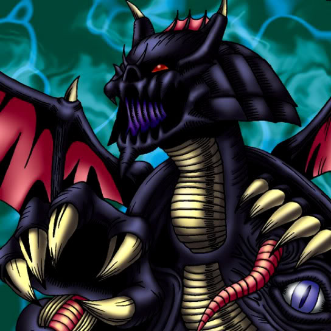

Lord of Zemia

STATS
ATK: 1300
DEF: 1000DECK COST
Deck Cost per Card: 23Fusion List (3 Possible Fusions)
- Lord of Zemia + Celtic Guardian = Dark Elf
- Lord of Zemia + Dancing Elf = Dark Elf
- Lord of Zemia + Yamatano Dragon Scroll = Blackland Fire Dragon